Set for Strangers in Times Square

Location:
43rd and 7th, Times Square, New York, New York40°45'24.4"N 73°59'10.1"W
aim:
- Why do people come to Times Square?
- Do they prefer a crowded or an uncrowded Times Square space?
- Understanding the vibe people associate with Times Square.
Rules:
1. No text or instructions on the installation.
2. Observe whether the users interact with our installation the way we had expected them to.
Design Statement:
Through this project, we wish to understand the vibe people associate with Times Square. We plan to achieve that by collecting their preferences of visiting crowded versus uncrowded Times Square.
Team: (X2) X Squared
- Ziyuan Wang
- Akshansh Chaudhary
- Sweksha Sinha
How:
Preference collection through voting on posters which depicted the 2 scenarios of Times Square.
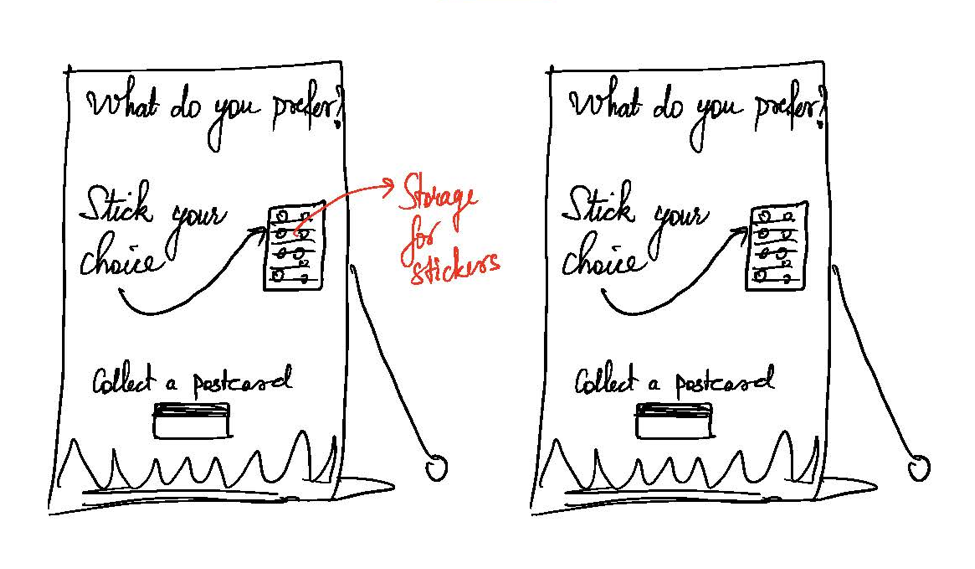
VISUAL Affordances:
- Stack of postcards giving the illustration which are placed so that they can be collected.
- Difference in the two stack of cards.
- Subconsciously people get influenced in the choices they make based on the way it has been perceived by others.
- Empty faces of people.
- Blank spaces in sticker pamphlets.
- Hand with the sticker on top of the installation, indicating that one had to take off the stickers and interact with them (vote for their preference).
- Illustration made for the two disparate scenarios of a crowded and an uncrowded Times Square.
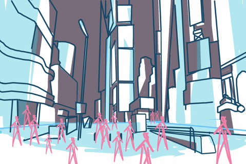
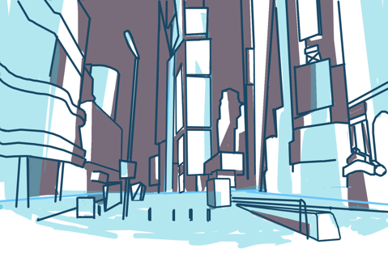
A draft of the sketches which would be used for the background of the standee and the postcard.
Location:
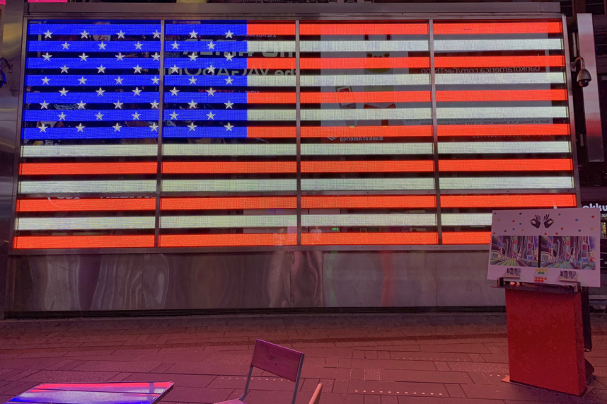
- Same illustration as the view from the spot where we placed the installation.
- The installation was placed next to a landmark, near the US flag on 43rd street where people often stop by to take pictures.
- The direction of the placement of the installation was such that it came on the way of the people who passed by that spot.
- People were able to notice the installation more since it was placed next to the flag which has a huge seating area.
STRUCTURE/MODEL:
- We made the installation keeping in mind the height and convenience factors in tandem.
- We kept the installation where the users were supposed to interact at eye level so that easy to interact with it. Be it grabbing the stickers to vote, taking time to look at the installation, we gave enough space for the users to rest their hands over it by making it as a podium style.
Working Process & Prototype
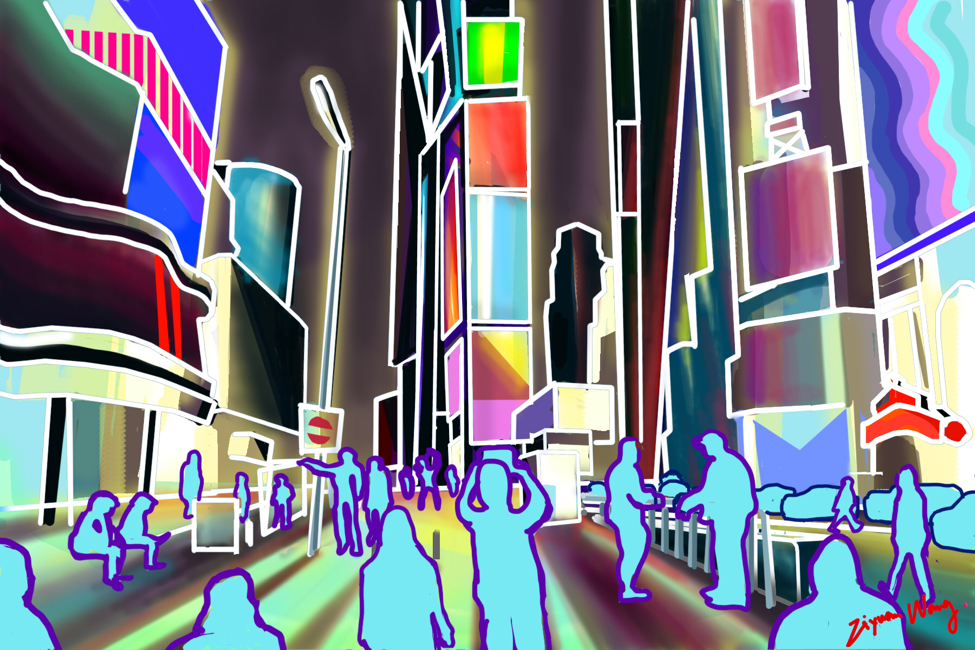
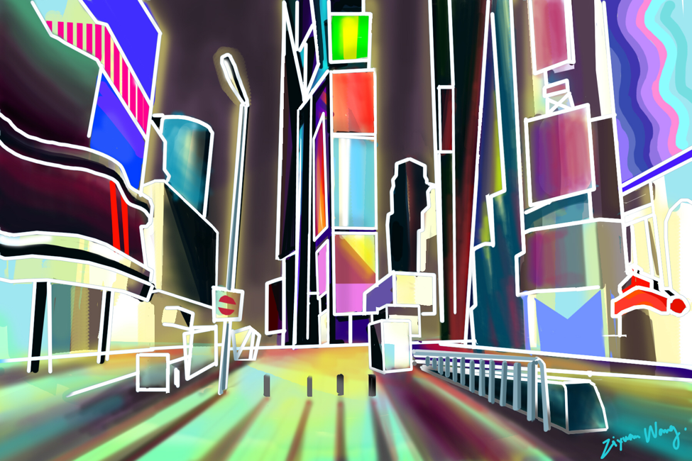
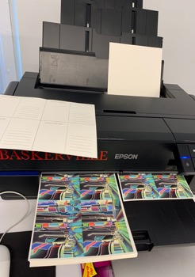
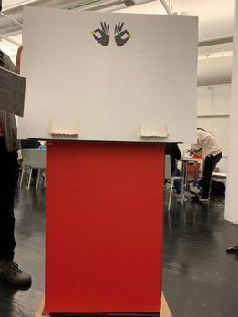
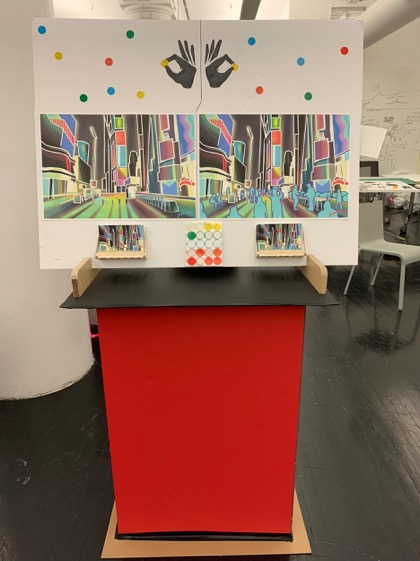
Final Test & Result
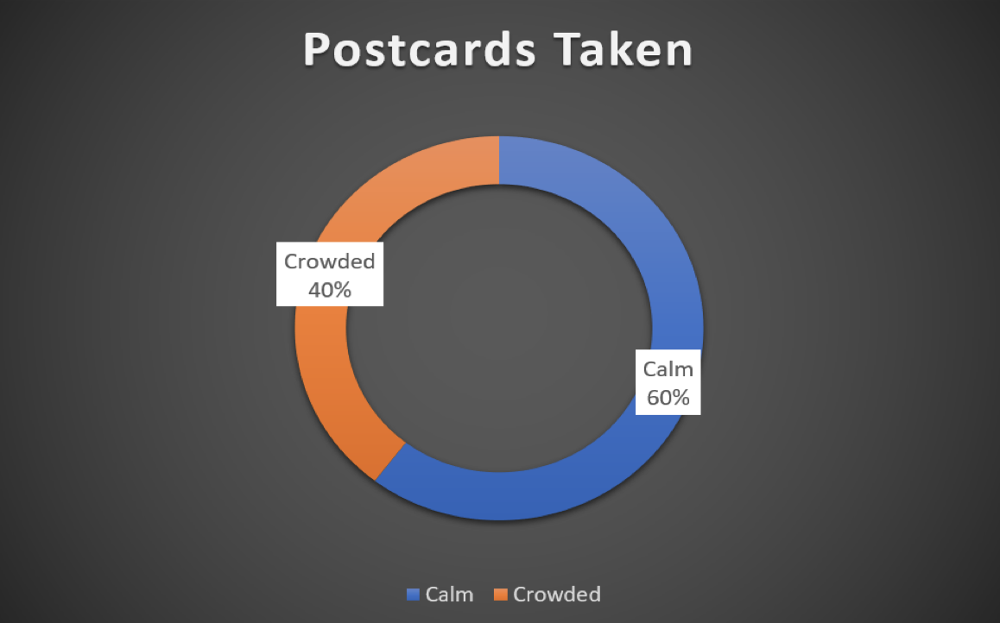
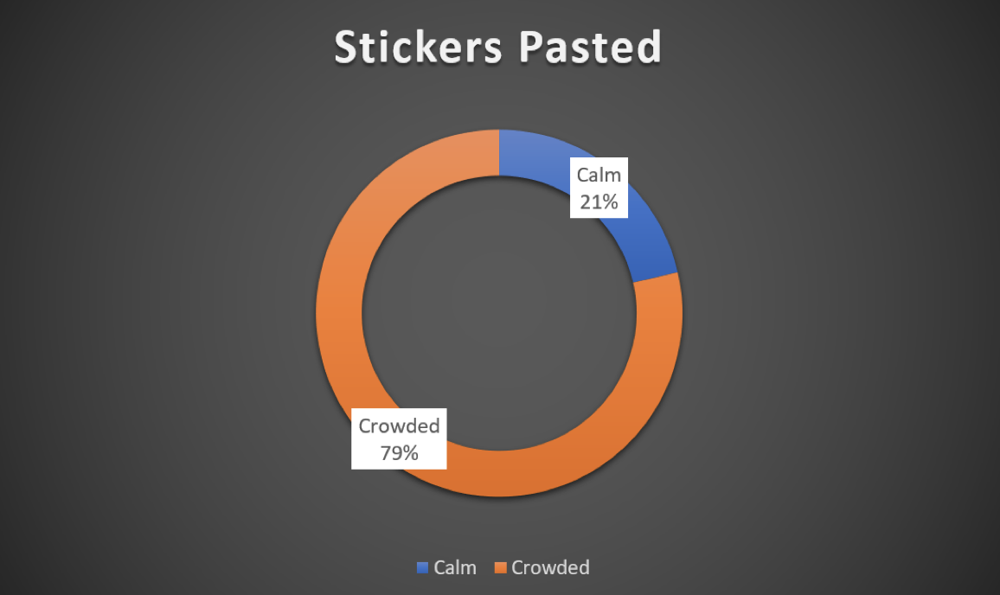
- Over 70 users interacted with our installation using the stickers and the postcards.
- People preferred the 'Calm & uncrowded Times Square' postcards over the crowded one.
- They were playing around with the installation by placing stickers over the face of the people in the 'Crowded Times Square' poster.